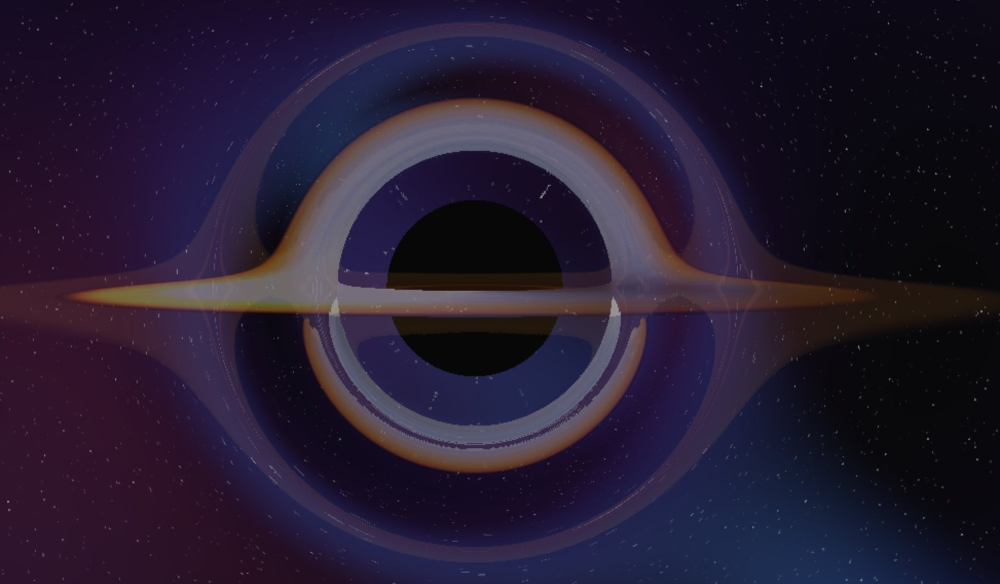

Real-Time General-Relativistic Black Hole Simulation
Personal project · 2025

Overview
I wrote a WebGL2/GLSL ray marcher that integrates null geodesics (RK4, adaptive step) in the Schwarzschild metric. It renders the photon ring, gravitational lensing and a Doppler-beamed accretion disk.
Tools
I used WebGL2 and GLSL, and built it with OpenCode and a self-hosted agentic AI workflow.
Gallery
Screenshots of the live demo.

